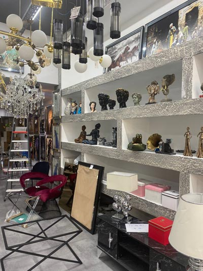
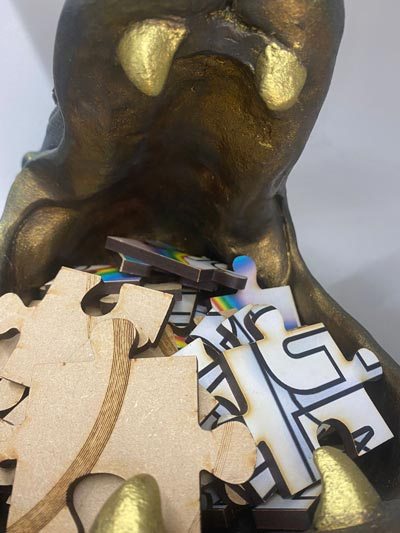
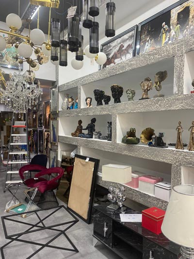
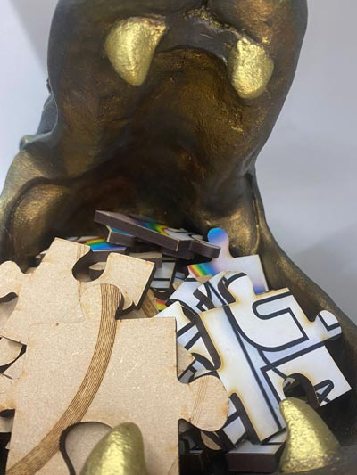

Hallo Solarpunks!

Deze tekst staat links.
Deze tekst is gecentreerd omdat de body text-align: center is de style heeft.
Deze tekst staat rechts

 




╋╋╋╋╋╋┏┓╋╋╋╋╋╋╋╋╋╋╋╋╋╋┏┓
╋╋╋╋╋╋┃┃╋╋╋╋╋╋╋╋╋╋╋╋╋╋┃┃
┏━━┳━━┫┃┏━━┳━┳━━┳┓┏┳━┓┃┃┏┓
┃━━┫┏┓┃┃┃┏┓┃┏┫┏┓┃┃┃┃┏┓┫┗┛┛
┣━━┃┗┛┃┗┫┏┓┃┃┃┗┛┃┗┛┃┃┃┃┏┓┓
┗━━┻━━┻━┻┛┗┻┛┃┏━┻━━┻┛┗┻┛┗┛
╋╋╋╋╋╋╋╋╋╋╋╋╋┃┃
╋╋╋╋╋╋╋╋╋╋╋╋╋┗┛